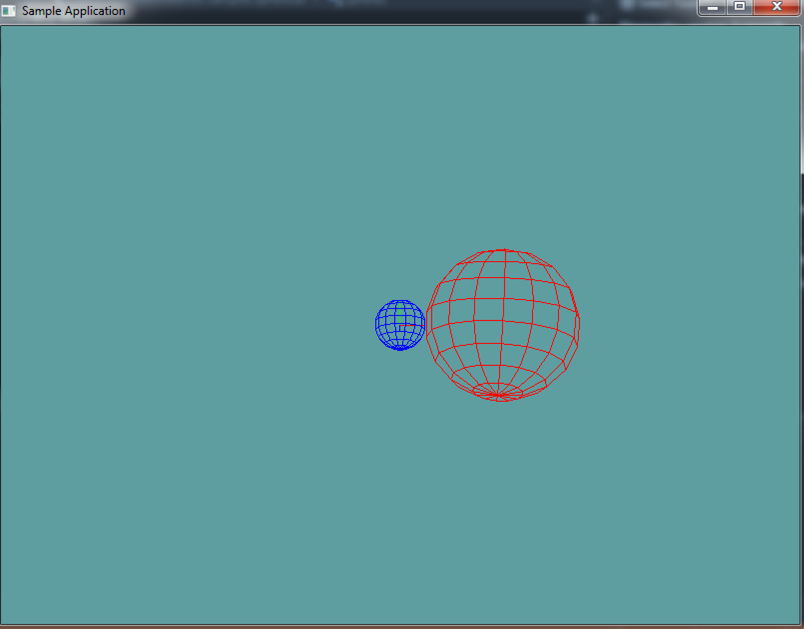

Sphere
Other than a point, the next most basic 3D shape. A sphere consists of a point and a radius. The radius of a sphere goes half-way accross it. So, a sphere with a radius of 1, will have a diameter of 2. This can be counter-intuitive when modelling a world, but keep it in mind!

Because we're not going to actually expose a lot of the data underneath the sphere, i'm going to store the point as a Vector3, and the radius as a float, but you could store the point as a Point
Based on the above information, and the image, the simplest implementation of a sphere would be:
// THIS BLOCK IS JUST SAMPLE CODE, DON'T COPY IT!
class Sphere { // Could be a struct?
public Vector3 position; // Could be 3 floats?
public float radius = 1f;
}
Code Guide
Everything in and after the Rendering region will compile. The code above it is more of a suggestion than a hard guide, tough i do think this is good design. The CreateRenderArrays function MUST be called in EVERY constructor.
using System;
using OpenTK.Graphics.OpenGL;
using Math_Implementation;
class Sphere {
Vector3 point = new Vector3();
float radius = 1f;
public Point Position { /* TODO */ } // Gets / Sets point vector
public float Radius { /* TODO */} // Self explanatory
public Sphere() {
CreateRenderArrays(); // Mush call this to create Arrays
}
public Sphere(Point p, float r) {
// TODO: Set member variables
CreateRenderArrays(); // Mush call this to create Arrays
}
public Sphere(Vector3 p, float r) {
// TODO: Set member variables
CreateRenderArrays(); // Mush call this to create Arrays
}
public Sphere(float x, float y, float z, float r) {
// TODO: Set member variables
CreateRenderArrays(); // Mush call this to create Arrays
}
#region Rendering
private float[] verts = null;
private float[] norms = null;
private uint[] indices = null;
private void CreateVBO(uint rings = 10, uint sectors = 15) {
// From:
// http://stackoverflow.com/questions/5988686/creating-a-3d-sphere-in-opengl-using-visual-c/5989676#5989676
// http://stackoverflow.com/questions/7957254/connecting-sphere-vertices-opengl
float R = 1f/ (float)(rings - 1);
float S = 1f/ (float)(sectors - 1);
float M_PI = 3.14159265358979323846f;
float M_PI_2 = 1.57079632679489661923f;
verts = new float[rings * sectors * 3];
norms= new float[rings * sectors * 3];
indices = new uint[rings * sectors * 4];
int v = 0;
int n = 0;
int i = 0;
for (int r = 0; r < rings; r++) {
for (int s = 0; s < sectors; s++) {
float y = (float)Math.Sin(-M_PI_2 + M_PI * r * R);
float x = (float)Math.Cos(2f * M_PI * s * S) * (float)Math.Sin(M_PI * r * R);
float z = (float)Math.Sin(2f * M_PI * s * S) * (float)Math.Sin(M_PI * r * R);
verts[v++] = (x /* * radius*/);
verts[v++] = (y /* * radius*/);
verts[v++] = (z /* * radius*/);
norms[n++] = (x);
norms[n++] = (y);
norms[n++] = (z);
}
}
if (v != verts.Length) {
Console.WriteLine("ERROR, Wrong number of verts!");
}
if (n != norms.Length) {
Console.WriteLine("ERROR, Wrong number of norms!");
}
for (int r = 0; r < rings - 1; r++) {
for (int s = 0; s < sectors - 1; s++) {
indices[i++] = ((uint)(r * sectors + s));
indices[i++] = ((uint)(r * sectors + (s + 1)));
indices[i++] = ((uint)((r + 1) * sectors + (s + 1)));
indices[i++] = ((uint)((r + 1) * sectors + s));
}
}
if (i != indices.Length) {
Console.WriteLine("ERROR, Wrong number of indices!");
}
}
public void Render() {
GL.PushMatrix();
GL.Translate(point.X, point.Y, point.Z);
GL.Scale(radius, radius, radius);
GL.EnableClientState(ArrayCap.VertexArray);
GL.EnableClientState(ArrayCap.NormalArray);
GL.VertexPointer(3, VertexPointerType.Float, 0, verts);
GL.NormalPointer(NormalPointerType.Float, 0, norms);
GL.DrawElements(PrimitiveType.Quads, indices.Length, DrawElementsType.UnsignedInt, indices);
GL.DisableClientState(ArrayCap.VertexArray);
GL.DisableClientState(ArrayCap.NormalArray);
GL.PopMatrix();
}
#endregion
public override string ToString() {
return "Position: (" + point.X + ", " + point.Y + ", " + point.Z + "), Radius: " + radius;
}
}
On Your Own
Implement a sphere class. Feel free to use the above code as a guide, or come up with your own implementeation.
Sample / Unit Test
You can Download the samples for this chapter to see if your result looks like the unit test.
This sample is short and simple, it makes a new sphere at origin, configures some render settings and draws the sphere. There is an image of what it's supposed to look like after the code.
using OpenTK.Graphics.OpenGL;
using Math_Implementation;
// Include the namespace where your primitives live!
namespace CollisionDetectionSelector.Samples {
class SphereSample : Application{
Sphere sphere = new Sphere(new Point(4, 0, 0), 3);
Sphere sphere2 = new Sphere();
public override void Intialize(int width, int height) {
GL.Enable(EnableCap.CullFace);
GL.PolygonMode(MaterialFace.FrontAndBack, PolygonMode.Line);
}
public override void Render() {
Matrix4 lookAt = Matrix4.LookAt(new Vector3(0.0f, 5.0f, 20), new Vector3(0.0f, 0.0f, 0.0f), new Vector3(0.0f, 1.0f, 0.0f));
GL.LoadMatrix(lookAt.OpenGL);
GL.Begin(PrimitiveType.Lines);
Line(1f, 0f, 0f);
Line(0f, 1f, 0f);
Line(0f, 0f, 1f);
GL.End();
GL.Color3(0f, 0f, 1f);
sphere2.Render();
GL.Color3(1f, 0f, 0f);
sphere.Render();
}
void Line(float x, float y, float z) {
GL.Color3(x, y, z);
GL.Vertex3(0f, 0f, 0f);
GL.Vertex3(x, y, z);
}
public override void Resize(int width, int height) {
GL.Viewport(0, 0, width, height);
GL.MatrixMode(MatrixMode.Projection);
float aspect = (float)width / (float)height;
Matrix4 perspective = Matrix4.Perspective(60, aspect, 0.01f, 1000.0f);
GL.LoadMatrix(Matrix4.Transpose(perspective).Matrix);
GL.MatrixMode(MatrixMode.Modelview);
GL.LoadIdentity();
}
}
}
